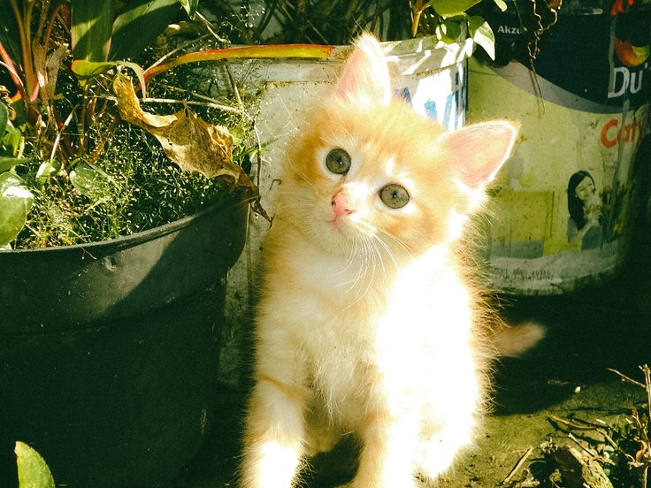

Kucing membutuhkan makanan yang mengandung nutrisi lengkap agar tetap sehat dan aktif. Makanan khusus kucing seperti dry food dan wet food biasanya sudah diformulasikan dengan kandungan protein yang tinggi untuk mendukung pertumbuhan dan energi kucing.
Selain itu, penting untuk memperhatikan porsi makan kucing agar tidak berlebihan yang bisa menyebabkan obesitas. Air minum juga harus selalu tersedia agar kucing tidak dehidrasi.
Hindari memberikan makanan manusia seperti coklat, bawang, atau makanan yang terlalu asin karena bisa berbahaya bagi kesehatan kucing.